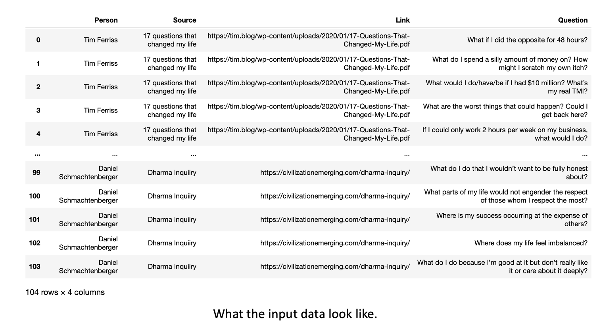
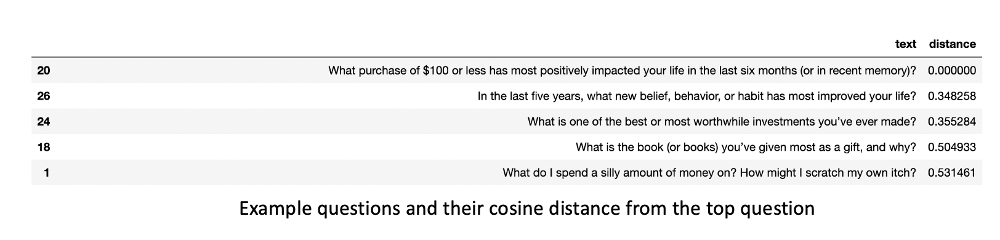
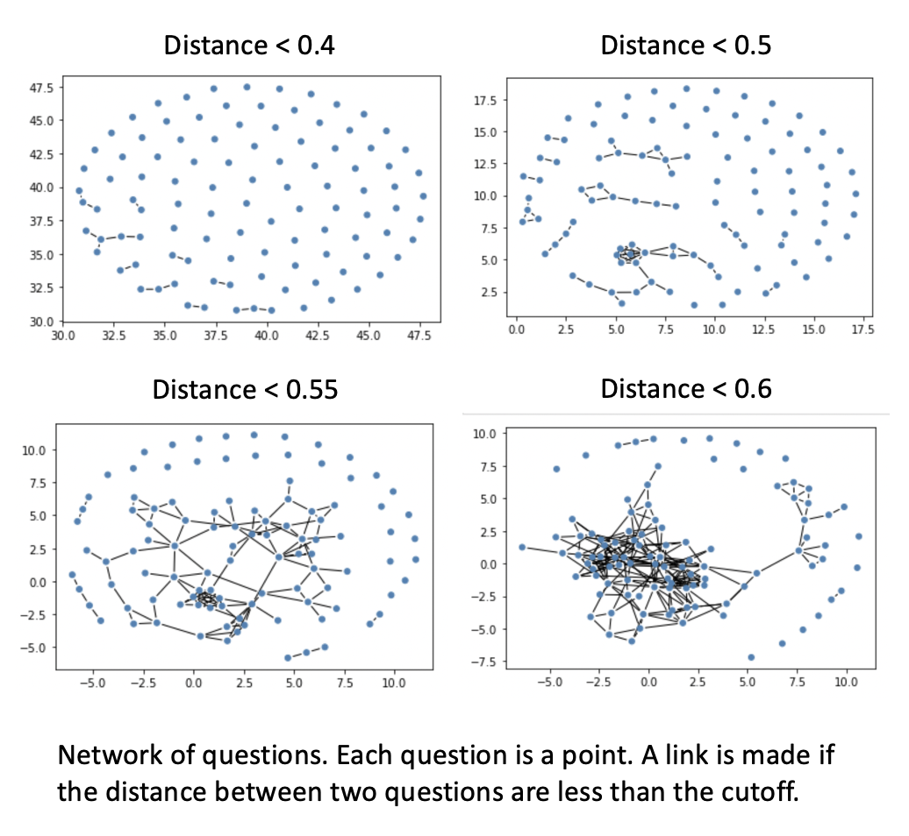
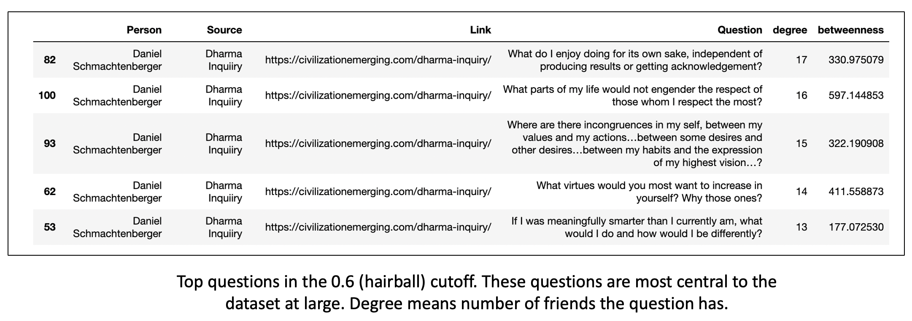
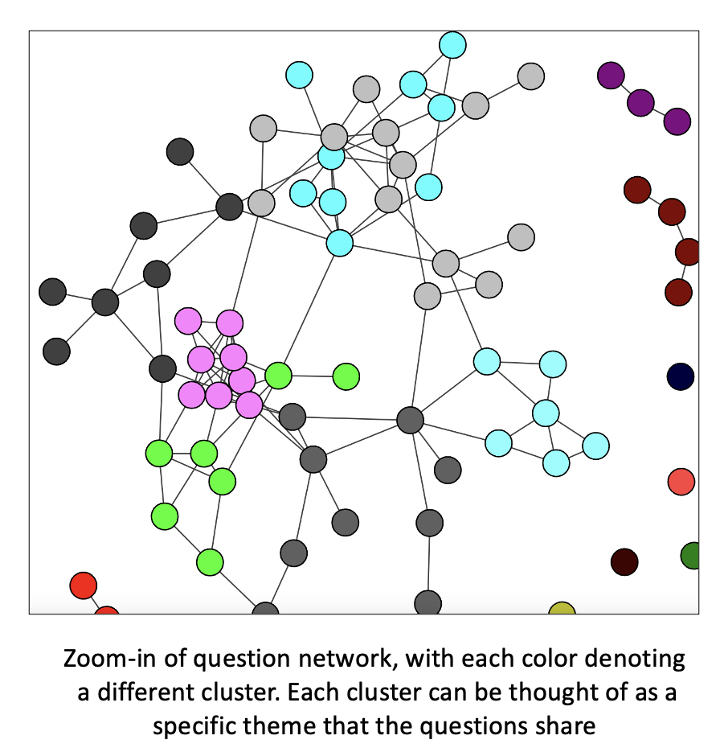
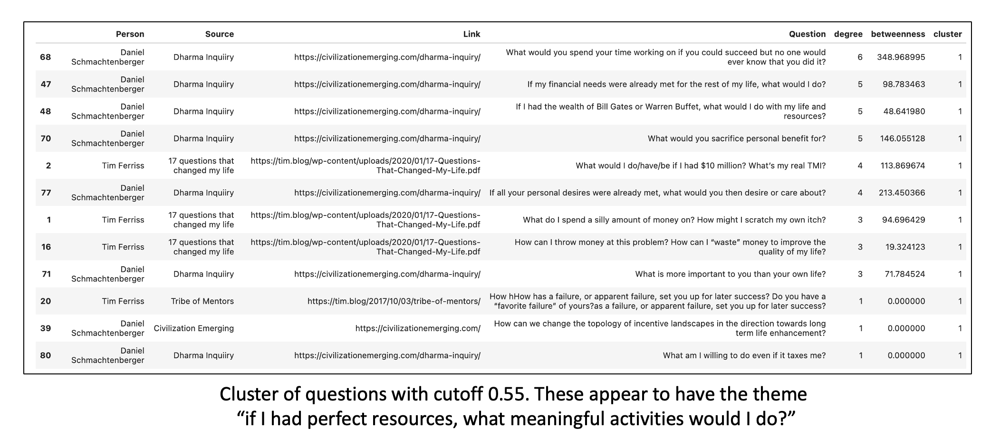
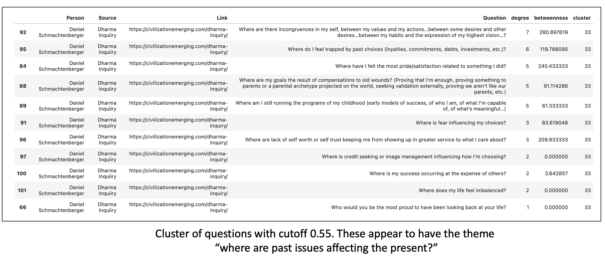

You are only as good as the questions you ask yourself and others. My uncle told me that many years ago when I was getting started with my career and it stuck. This has been relevant to me in terms of having and maintaining good friendships, being a good husband, being a good family member, being a good businessman, and when I was in graduate school, being a good scientist, and simply being an interesting person. These days, between work, family, and the state of the world, I have to ask a lot of tough questions every day. This is probably the same for you, too. I collect questions. These are usually from people I hear on podcasts when I am doing my chores, either on the podcasts or in later research into their material.
The problem I’m running into now is that the list is very long, and I need a new way to organize them. That’s where this project comes in. How do I turn a list of 100+ questions into something more digestable? Maybe something where I can see how the questions are related. Yes, I can categorize them myself, but what if there was a way to determine mathematically just how related one question is to another. What if there was a way I could turn the list into a relatedness network? I could see what questions lead to what other questions in terms of similarity. I could visualize the whole network and have a picture in my head that would help jog my memory. What if such a network were star-shaped, with one question in the very center leading to all other questions? This would mean that I should spend the majority of my time pondering that question sitting in the center. Or maybe there are groups of questions based on theme, and I just have to look at the “center” question in each of these groups to figure out what questions to ponder? This would reduce the list of 100 questions I need to keep in my head down to maybe 7 plus or minus 2. The remainder of the questions would logically follow from these, so I wouldn’t have to hold them in my head too.
The key bottleneck for a long time for this and related problems I’m working on was simply figuring out how I could have a relatedness metric between questions (or sentences in general). I revisited the problem recently and I came across pre-trained BERT language models, which is one of the gold standards for natural language processing right now. They are open source and completely free. They turn each question into a vector, which means you can calculate distances between questions.
So I’m excited to show what I’ve been working on, as it’s helped me quite a bit. The code is available on my GitHub, and it’s relatively straightforward to use even with minimal coding experience.
My input data is an example list of questions that I have found personally meaningful. They focus on personal and societal development, as this is simply where I’m at in life. These questions come first from productivity guru Tim Ferriss, from the questions he asks himself in The 4 Hour Workweek and those he interviews in Tribe of Mentors and next from philosopher Daniel Schmachtenberger. He has a set of personal development questions he uses to optimize one’s life for existential fulfillment, which he calls the Dharma Inquiry. He then has a set of questions directed at how to better civilization at large, which serves as a compass for a lot of his work, here. If you stop reading here and do nothing else with this project, I strongly encourage you to read through these questions I’ve linked between Tim Ferriss and Daniel Schmachtenberger. Below is what the input data look like.

I use the BERT transformer-based language model. I use the sentence-transfomers python package. There, I choose from a list of pre-trained models can be found here. Some of these pre-trained models contain over 1 billion training examples, and I am extremely grateful that they are available to anyone for free. It makes me feel more compelled to give back when I use them (hence this project and document). Anyway, this model takes sentences (in this case questions) as input and outputs a vector of a little over 700 numbers. In other words, it converts my questions into coordinates in a 700 dimensional coordinate plane. If that sounds a bit jarring to you, just know that it’s relatively easy to convert this kind of data into standard 2-D data we can wrap our heads around. From here, I measure the distance between each possible pair of questions, and I set a threshold. If two questions are closer than that threshold, they become “friends.” Otherwise, they are not friends. There are obviously many things you can toggle here, like the threshold and weighting the links in terms of their distance, but that is something that I’ll be doing in later versions. What I have here gets the job done for our purposes.

I determine how “good” a question is in terms of how many friends it has in the question network I make. I look at quesitons that have the most friends in the total dataset, and locally. To get at locally good questions, I do what’s called clustering, which is a way of automatically identifying communities within the network itself. If the network were two hairballs connected by a single link, the algorithm would detect and label two “clusters.” For those interested, I use Louvain clustering, mainly because its a gold standard for graphs that has been useful to me in previous projects, and it got the job done.
I used the same general-purpose model throughout, called “all-mpnet-base-v2,” which produces the highest quality output at the time of writing. In creating the question network, I toggled the maximum distnace cutoff. I used cosine distance as a metric, which gave me a scale between 0 and 1, where 1 is the maximum possible distance and 0 means the points are right on top of each other (eg. duplicates). I began to see community structure at a cutoff of 0.5. I note already at a cutoff of 0.6, the graph starts to look like a hairball where everyone is connected to everyone. I note that this is specific to the model I’m using, and I’m using the classical biologist’s approach of toggling the code and examining the output as a way to get intution around what the model is doing.

With a cosine distance cutoff of 0.6 in graph creation, we can determine which questions in the dataset have the most friends. The table below shows the results. The top question, “what do I do for its own sake…” can be interpreted as being similar to more questions in the dataset than the other questions. From a practical standpoint, if you wanted to get at the essence of the set of questions in this dataset (or any other dataset like it with a large number of data points, you could look at this question along with the others in the table below. This alone has helped me start to zoom in on what questions I should focus most on in this list.

Given that I saw community structure with cutoffs of 0.5 and 0.55 (see previous figure), I ran Louvain clustering to identify individual communities of questions within the dataset, and I ranked the questions within each community by degree centrality to get at the “archetype” questions that best defined the community. The clusters are organized as in the example image below.

An example of a community and its questions are in the tables below. You can see that looking at the dataset community by community allows you to quickly see what types of questions the dataset has and for each community of questions, which ones are most representative of the community. At the end of the day, if you want to figure out the most important and/or representative questions in the dataset, and the dataset displays community structure, you can go through each community and look at the top 5 or so questions within the given community. Now my list of questions have been reduced by an order of magnitude, to a number I can more easily hold in my head. You can see examples below.


TODO
I’m in a phase in my life where I am asking myself a lot of personal and business development questions so I can make sure I am going the right direction and making the right decisions. Thus, I assembled a dataset of my favorite questions, asked by two individuals, Tim Ferriss and Daniel Schmachtenberger, who have both had lots of influence on my life. The questions are overwhelming, so I wanted a way to organize them and rank them by their importance. That send me down the path of asking “what makes a question a good question?” I’ve been using the BERT language models to turn this dataset from a table of questions to a network of questions. After doing this, the same type of analysis you would otherwise do for facebook and twitter data is fair game, and highly relevant. The tables above show how I’ve been using the dataset and its analysis. Graph construction is important, and you can see that different cosine distance cutoffs can pull different information out of the networks. I eventually set a cutoff that produced a network that displayed community structure, ran Louvain clustering on it to pull out the communities, and used degree centrality to look at the questions that had the most friends (the most central questions to the community). This has allowed me to better utilize this dataset, to say the least, and to ask the proper questions.
You’ll notice that we have “betweenness” on each of the tables above that have degree centrality. This is another measure of centrality that looks at how many paths in the network are routed through a particular point. I’m working on integrating this into the analysis as well. It’s a bit more difficult to interpret, so I won’t say any more at this point. Just know that there are many other metrics that can be used alongside degree centrality. I used degree centrality here because it is the most straightforward. The code is available and many of the measures I have yet to explore are in the igraph library, which I was using for this.
You don’t have to just look at questions. I am also looking at various other data organized as sentences. This ranges from PubMed abstracts (relevant to my consulting work), and another project trying to get at the essence of “wisdom” literature by looking at verses in texts ranging from the Bible to the Tao Te Ching. These languge models have only been around and openly available for the past few years and they are therefore largely unexplored. I would encourage you to look at these models and ponder their relevance to whatever your domain of expertise. These models are powerful when they are combined with deep domain expertise. This is one reason why Stanford’s computer science department developed a “CS+X” major not long ago (which was later stopped in favor of students simply minoring in CS along with their major, or doing a CS+X double major). The tools are great if you know what to build. I’ve gotten quite far applying the cutting edge of computer science to biology, and I there are good odds that the world will be your oyster if you adapt the “CS+X” mentality as I did.